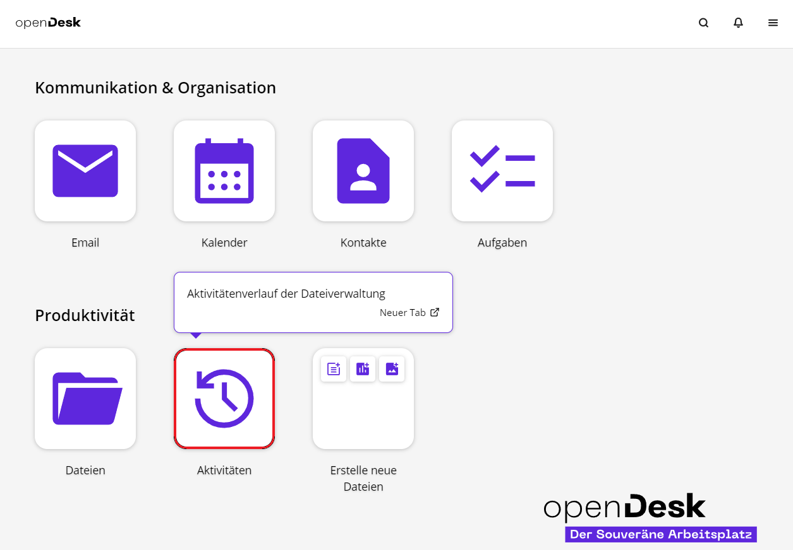
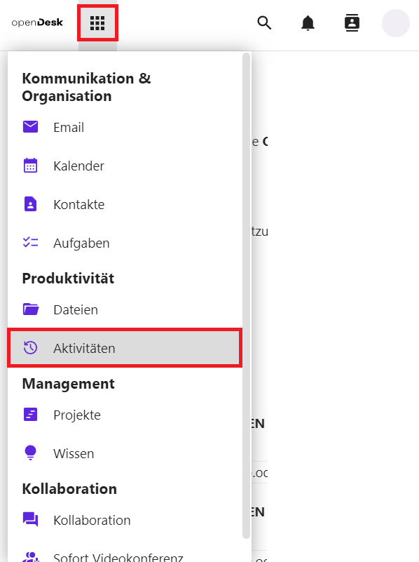
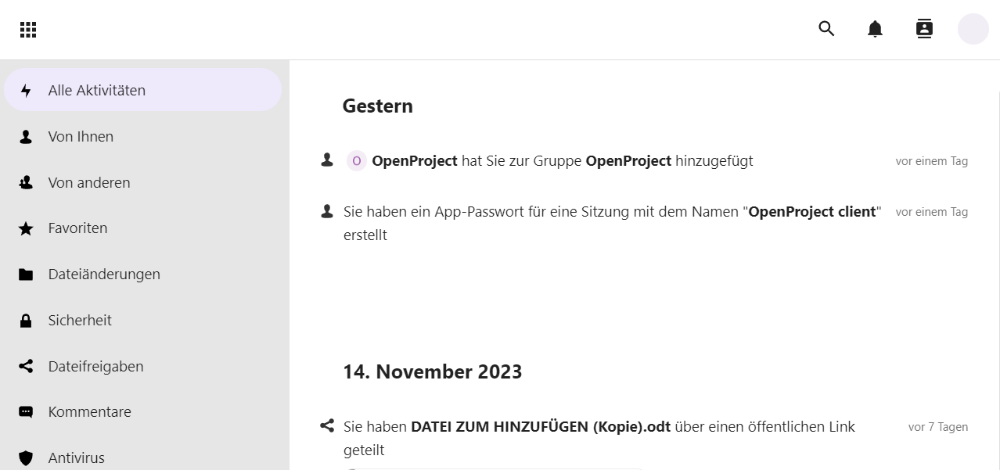
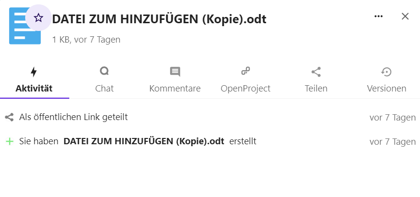
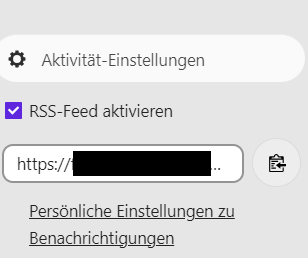

5 Aktivitäten
Es gibt zwei Möglichkeiten, auf das Modul Aktivitäten zuzugreifen. Die erste ist, wenn Sie sich auf der Startseite befinden. Klicken Sie auf das Modul Aktivitäten.

Die zweite Möglichkeit ist, wenn Sie sich in einem anderen Modul befinden. Klicken Sie auf das 9-Punkte-Symbol . Dort können Sie das Untermodul Aktivitäten auswählen.

Alle zuletzt durchgeführten Aktivitäten werden nach Auswahl des Moduls chronologisch aufgelistet.
Die Auflistung der Aktivitäten wird in Alle Aktivitäten , Von Ihnen, Von anderen, Favoriten, Dateiänderungen, Sicherheit, Dateifreigaben, Kommentare und Antivirus aufgeteilt. Sie können sehen, welche Dokumente Sie selbst bearbeitet haben und welche freigegebenen Dokumente andere Nutzerinnen und Nutzer bearbeitet oder freigegeben haben.

Folgende Aktivitäten werden erfasst
- Von wem wurden Dokumente oder Ordner erstellt?
- Wer hat ein Dokument zu welchem Zeitpunkt verändert?
Wer hat wann welches Dokument gelöscht? Veränderungen können Sie direkt überprüfen, indem Sie über den Titel des Dokuments das Dokument öffnen.


5.1 Aktivitäten filtern
Um die Auflistung der Aktivitäten zu filtern, können Sie links in der Spalte verschiedene Filter auswählen:

Im Folgenden werden die Filter kurz beschrieben:
5.1.1 Eigene Aktivitäten
Um nur die eigenen Aktivitäten zu sehen, wählen Sie den Punkt Von Ihnen aus.
5.1.2 Aktivitäten von anderen Personen
Unter dem Punkt Von anderen haben Sie die Möglichkeit, sich nur die Aktivitäten der anderen Personen in geteilten Dokumenten anzeigen zu lassen.
5.1.3 Favoriten
Die Auswahl von Favoriten ermöglicht Ihnen das Anzeigen von Aktivitäten in Dateien, die Sie als Favoriten markiert haben.
5.1.4 Dateiänderungen
Sie können nach Dateiänderungen filtern und sich so eine Liste anzeigen lassen, in der nur Dateien mit Änderungen aufgelistet werden.
5.1.5 Sicherheit
Sie können nach Sicherheit filtern und sich so eine Liste anzeigen lassen, in der nur Sicherheits-Veränderungen aufgelistet werden.
5.1.6 Dateifreigaben
Aktivitäten können auch nach Dateifreigaben gefiltert werden, sodass aufgelistet wird, wer wann welche Dateien mit wem geteilt hat.
5.1.7 Kalender
Änderungen am Kalender oder an Kalenderterminen werden Ihnen unter dem Punkt Kalender angezeigt.
5.1.8 Aufgaben
Änderungen an Aufgaben werden Ihnen durch einen Klick auf Aufgaben angezeigt.
5.1.9 Kommentare
Unter dem Punkt Kommentare werden nur neue und geänderte Kommentare angezeigt.
5.1.10 Kontakte
Sie können Kontakte wählen, um Änderungen an Kontakten und Adressbüchern anzuzeigen.
5.1.11 Antivirus
Die Aktivitäten des Antiviren-Programms werden Ihnen über die Auswahl Antivirus angezeigt.
5.2 Einstellungen
Über Aktivitätseinstellungen unten links auf dem Bildschirm können Sie einen RSS-Feed für die Aktivitäten aktivieren. Setzen Sie dazu einen Haken bei RSS-Feed aktivieren . Daraufhin erscheint ein Textfeld mit dem dazugehörigen Link, den Sie kopieren und mit anderen teilen können.

5.2.1 Persönliche Benachrichtigungseinstellungen
Klicken Sie auf Persönliche Benachrichtigungseinstellungen , um genauer festzulegen, ob und in welcher Form Sie über verschiedene Aktivitäten benachrichtigt werden möchten.